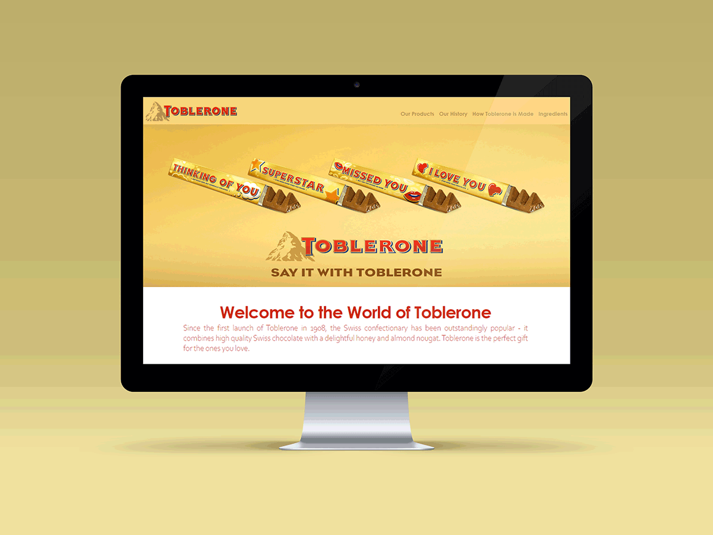
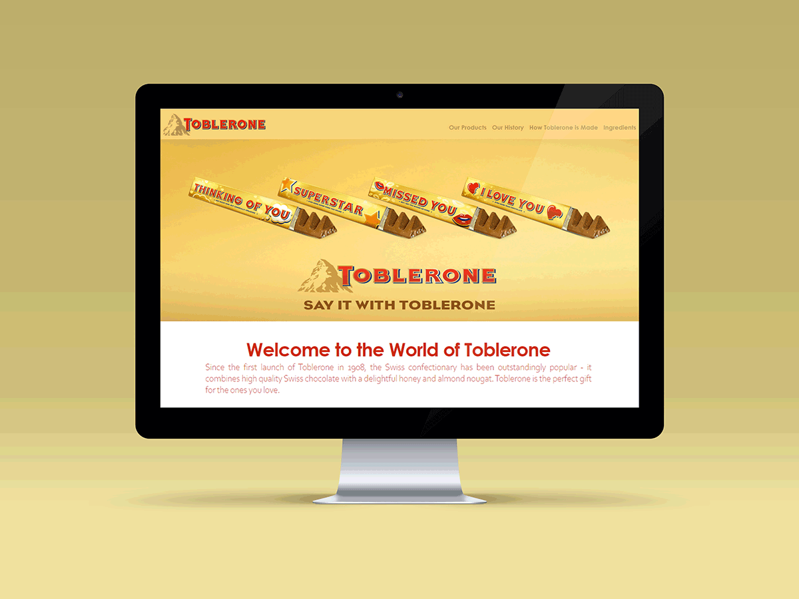

Concept
Toblerone's distinctive triangular chocolate bar is known and loved around the world. It is a brand that with its rich history and unique branding has maintained a strong position in the global chocolate market.
 

Project Description
The focus for my 1st semester exam project was to create a responsive web
design for a specific company. As I found Toblerone's way of maintaining brand awareness and the
brand in its entirety very interesting and unique, they were the obvious choice.
In order to design and develop a website that was true to Toblerone's iconic brand, I wanted
to put an emphasis on the aspects that built the foundation for this brand; their unique product and
the history behind it. Since Toblerone already has a well-established brand identity, I simply
designed the mobile and desktop version of their website based on elements from this identity.